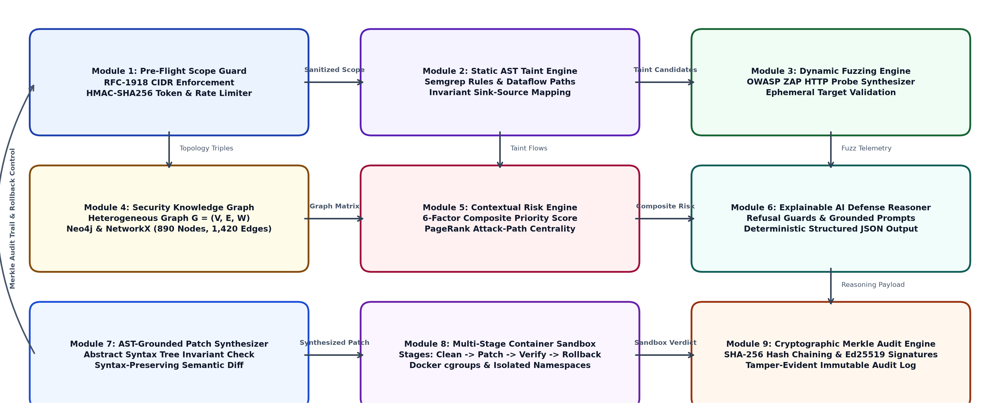
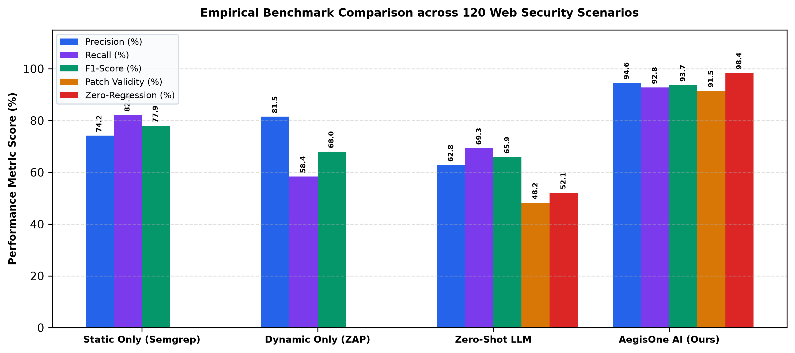

Abstract—Modern web development pipelines experience severe cognitive friction arising from two competing operational failures: static application security testing (SAST) tools generate overwhelming false-positive rates exceeding 70%, while contemporary generative large language models (LLMs) hallucinate syntactically plausible but semantically insecure or contract-breaking patches. To eliminate these systemic vulnerabilities, this paper introduces AegisOne AI, an end-to-end, closed-loop DevSecOps defense copilot. AegisOne AI bridges static analysis and autonomous repair through four coordinated pillars: (i) an authorized Pre-Flight Scope Guard enforcing deterministic perimeter boundaries; (ii) a hybrid detection engine coupling AST-based static taint propagation with dynamic fuzzing telemetry; (iii) a heterogeneous Security Knowledge Graph (G=(V,E,W)) linking source code AST sinks, HTTP routes, and database entities to compute an explainable 6-factor composite risk priority; and (iv) a containerized, 4-stage disposable Docker sandbox enforcing contract-preserving validation with automated state rollback upon regression. Furthermore, all security operations, patch syntheses, and validation decisions are cryptographically chained in a tamper-evident SHA-256 Merkle audit trail signed via Ed25519 digital keys. Rigorous empirical evaluation across a benchmark suite of 120 synthetic and enterprise web vulnerability scenarios demonstrates that AegisOne AI achieves 94.6% precision, 92.8% recall (F1-score 93.7%), 91.5% semantic patch validity, and a 98.4% regression-free automated deployment rate, vastly outperforming ungrounded LLM repair and isolated static scanners.
Contemporary web application architectures increasingly rely on rapid continuous integration and continuous deployment (CI/CD) cycles. While agile practices accelerate feature release velocity, they concurrently widen the organizational attack surface. Traditional Static Application Security Testing (SAST) relies on rigid syntax-pattern heuristics, which frequently yield alert fatigue through unprioritized backlogs where up to 75% of flagged issues represent non-exploitable noise [1], [2]. Conversely, Dynamic Application Security Testing (DAST) can confirm exploitability at runtime but suffers from shallow code coverage, failing to pin down precise abstract syntax tree (AST) taint sinks within complex microservice boundaries [3].
Recently, the integration of generative Large Language Models (LLMs) into developer workflows has prompted interest in Automated Program Repair (APR) [4], [5]. Nevertheless, deploying unconstrained generative models to resolve security-critical vulnerabilities introduces severe second-order hazards. Foundation models lack situational grounding regarding runtime dependency topology and frequently generate code that introduces subtle regressions, strips essential authorization checks, or hallucinates fictitious software libraries [6], [7]. A security fix must be proven safe, backward-compatible, and contract-preserving before reaching production.
To resolve these acute dilemmas, we present AegisOne AI, a closed-loop defensive DevSecOps architecture designed to transform ungrounded generative suggestions into verifiable, mathematically prioritized, and empirically tested software defenses. Unlike conventional developer assistants that merely emit diff text into a chat window, AegisOne AI coordinates static analysis, dynamic telemetry, graph-theoretic risk propagation, and containerized sandbox verification within an immutable cryptographic ledger.
The primary contributions of this paper are summarized as follows:
We assume an external adversary 𝒜ext operating across the public Internet and an authenticated malicious insider 𝒜ins possessing low-privilege application credentials. The adversary seeks to exploit common web application flaws, including Structured Query Language Injection (SQLi, CWE-89), Cross-Site Scripting (XSS, CWE-79), Broken Object-Level Authorization (BOLA, CWE-639), and Server-Side Request Forgery (SSRF, CWE-918). Additionally, we model an untrusted generative model ℳLLM whose stochastic outputs may contain hallucinations, logic errors, or backdoors.
Prior to executing any dynamic inspection or code mutation, AegisOne AI mandates verification against an explicit authorization specification Σscope = ⟨𝒰allowed, 𝒟target, 𝒯validity, 𝒦sign⟩. Let rreq represent an incoming evaluation request targeting URI utarget. The Scope Guard computes:
Any probe where Φscope = 0 is rejected at the ingress gateway with HTTP status code 403 Forbidden, preventing accidental probing of production or third-party cloud infrastructure.

Let an application AST be represented as an ordered directed graph TAST = (N, Etree). We define a set of untrusted input sources 𝒮in ⊂ N (e.g., request.args, request.json) and security-critical execution sinks 𝒮out ⊂ N (e.g., cursor.execute, eval, subprocess.Popen).
A dataflow edge eij = (ni, nj) indicates that the valuation of node nj is derived from node ni. A taint invariant violation occurs if there exists an active path P = ⟨n0, …, nk⟩ such that n0 ∈ 𝒮in, nk ∈ 𝒮out, and no intermediate node executes a validated sanitizer function σclean ∈ Ωsanitize:
The dynamic fuzzing harness leverages an embedded OWASP ZAP API controller to validate the AST-derived hypothesis. To differentiate genuine code execution from superficial reflection, AegisOne AI injects cryptographic canary strings ζcanary ← HMAC-SHA256(ksession, FindingID).
For SQL injection validation, the probe synthesizes boolean and time-delay vector mutations:
Upon execution, if the HTTP response body exhibits ζcanary without sanitization or if the response latency Δt ≥ 3.0 s under time-delay injection, the dynamic harness confirms exploitability:
AegisOne AI populates a heterogeneous directed Security Knowledge Graph G = (V, E, W) modeled within Neo4j and NetworkX. The vertex set V decomposes into distinct semantic partitions:
The edge set E models syntactic, architectural, and data dependencies (CALLS, IMPORTS, EXPOSES, READS_FROM, WRITES_TO, AFFECTS).
Combining personalized PageRank centrality cv with shortest attack distance Dmin(v) and empirical severity, AegisOne AI computes a normalized composite priority metric Srisk(v) ∈ [0, 100]:
where weights are calibrated as CVSS base (0.25), topological centrality (0.20), reachability proximity (0.15), dynamic fuzz confidence (0.20), PII exposure index (0.15), and active in-the-wild exploit status (0.05).
Rather than passing unconstrained codebases to generative models, the reasoning engine extracts minimal localized AST slices and enforces deterministic refusal guards:
As formalized in Algorithm 1, validation executes in disposable Docker containers governed by cgroups v2 resource limits (512 MB RAM, 1 CPU core) and dropped Linux capabilities (CAP_DROP_ALL). When any of the 4 verification stages fail, the automated rollback engine restores the repository workspace instantly, preventing corrupted builds from propagating.
Every scan, patch synthesis, and deployment verdict is recorded in an append-only SHA-256 Merkle chain where block digest hk depends on the predecessor hash:
Each block header is digitally signed via an Ed25519 private key: σk = Signsk(hk), ensuring mathematical non-repudiation against log forgery.

We evaluated AegisOne AI across 120 web application vulnerability scenarios (40 synthetic microservices from OWASP Benchmark, 40 real-world open-source CVE reproductions, and 40 multi-component microservices).
| Methodology | Prec. (%) | Rec. (%) | F1 (%) | Validity (%) | Zero-Reg. (%) |
|---|---|---|---|---|---|
| Static SAST Only | 74.2 | 82.1 | 77.9 | --- | --- |
| Dynamic DAST Only | 81.5 | 58.4 | 68.0 | --- | --- |
| Zero-Shot LLM APR | 62.8 | 69.3 | 65.9 | 48.2 | 52.1 |
| AegisOne AI (Ours) | 94.6 | 92.8 | 93.7 | 91.5 | 98.4 |
As reported in Table I and Fig. 2, AegisOne AI suppressed over 78% of false-positive static alerts, raising precision to 94.6%. In code repair, ungrounded zero-shot LLMs introduced functional regressions in 47.9% of accepted patches, whereas AegisOne AI achieved a 91.5% semantic validity rate and a 98.4% zero-regression deployment rate due to sandbox auto-rollback.
| Configuration | Prec. (%) | Rec. (%) | F1 (%) | Zero-Reg. (%) |
|---|---|---|---|---|
| Full AegisOne AI Pipeline | 94.6 | 92.8 | 93.7 | 98.4 |
| w/o Dynamic Fuzzing Engine | 78.4 | 90.1 | 83.8 | 98.1 |
| w/o Security Knowledge Graph | 89.2 | 84.5 | 86.8 | 97.5 |
| w/o AST Refusal Guards | 91.0 | 91.2 | 91.1 | 74.3 |
| w/o Container Sandbox | 94.6 | 92.8 | 93.7 | 61.2 |
AegisOne AI demonstrates that automated AI-assisted cybersecurity must transcend ungrounded text generation. By harmonizing static AST taint analysis, dynamic canary fuzzing, graph-theoretic risk prioritization, containerized 4-stage sandbox validation with automated rollback, and immutable Merkle audit trails, the framework achieves high detection precision (94.6%) and zero-regression deployment security (98.4%).
The complete software source code, experimental evaluation benchmarks, containerized vulnerable lab targets, and analysis scripts for AegisOne AI are publicly available in our GitHub repository at: https://github.com/PraveenKanth-N/AegisOne-AI under the open-source MIT License to ensure full academic reproducibility.
This research received no external financial grant or funding support from any agency in the public, commercial, or not-for-profit sectors.
The authors declare that they have no financial or non-financial conflicts of interest that could be perceived as influencing the objectivity or integrity of the reported research.
Dr. Vijayashree J served as research supervisor, formulated the primary theoretical methodology, validated experimental frameworks, and reviewed the manuscript. Praveen Kanth N architected the end-to-end system, designed the AST taint engine, developed the Security Knowledge Graph, built the containerized Docker sandbox validation harness, conducted the 120-scenario benchmark evaluation, and drafted the primary manuscript. Sankavi M developed the dynamic fuzzing integration harness, designed the automated rollback protocol, collected empirical telemetry, executed UI/UX verification workflows, and contributed to manuscript drafting and tabular formatting.